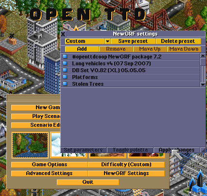
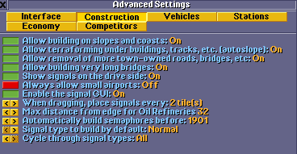
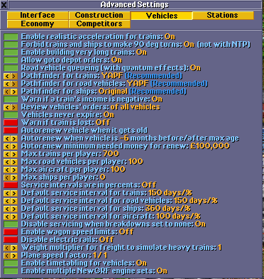
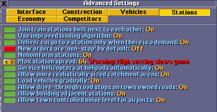
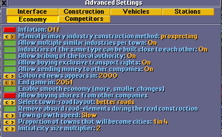
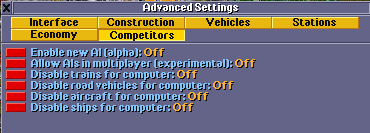
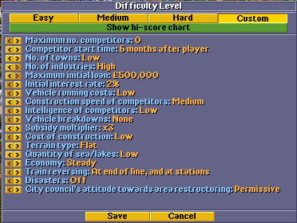
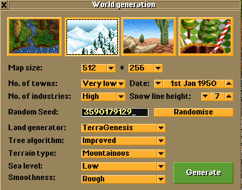

Creating a good new game – Call for scenarios and maps
As we currently have started a new game, prior to that – as usual – the discussion about what kind of map should be chosen, which newgrf we should use and which – if at all – boundary conditions should be used. This may drag a bit – to the dismay of a few persons, wishes may even be mutually exclusive – or result in less than optimally configured games.
Start screen and main menu of OpenTTD
Therefor I’d like to encourage all people to consider setting up a nice new game and providing a savegame from which a new public server game (or possibly also pro zone game) might start.
Before you actually start creating a map, you have to choose from the main OpenTTD screen the newgrfs you want the new game to use. Subsequent modification may work, but it may also introduce all kinds of bugs which can render a game unplayable. General rule: per grf type choose only ONE single grf. When choosing grfs, mind that some grfs require a certain climate – especially important for industry and train set grfs.
- first grf is always the #openttdcoop grfpack version grf
- then add grfs which modify landscape like trees, OpenGFX,…
- then add station grfs*
- add grfs which modify the infrastructure like depots, tracks, roads, bridges, foundations, town replacements
- add grfs for ships*
- add grfs for planes*
- add grfs for road vehicles*
- add ONE grf for a train set
Entries marked with * are entries where more than one grf may be chosen. In all other cases stick with one grf.
The GRFs that are currently supported by our server can be found here. You should have them already, if you play on our server regularily.
Now, check the grf list in a game whether there are any incompatibilities or requirements like one grf comes before another – fix those. At this stage you also might want to set grf parameters for some grf. Most road, town and vehicle sets take grf parameter to modify their behaviour. Have a look at the supplied readme files for details. E.g. the 2cc train set allows to control the pricing and running costs as well as the choice of available trains via grf parameters.

Use the grf presets to save your selection of grfs for future reference – it’s a nice selection which you may want to refer to later :). Don’t forget to apply the changes you made.
Now, that you have chosen the grfs, make sure you use appropriate config or advanced settings. Many can be changed on the fly during the running game, but some cannot, they’re marked with a preceeding *. Options which are highly reccommended are set in bold text.
Here are the settings which work for me:

You want to allow building on slopes and also all kind of bridges. Don’t reduce the distance where refineries can be built too much, keep it at 32

Here are some really important settings:
- Enable realistic acceleration for trains = ON: or slopes will really slow down trains
- *Forbid trains and ships to make 90 deg turns = ON: everything else is plain ugly and some track layouts won’t work anymore
- Pathfinders: Use the recommended ones
- never expire vehicles = ON: why not allow building of all vehicles?
- Disable servicing when breakdowns set to none = ON
- *Enable wagon speed limits = OFF: we usually prefer faster trains
- Plane speed factor = 1/1: if we use planes as money maker we need fast planes.
- Enable timetabling for vehicles = ON: sure we want to use this feature sometimes
- *Enable multiple NewGRF engine sets: ON It will allow different vehicle sets to co-exist.

Also here all settings should be exactly as shown. Especially mind the station spread and that the towns allow us to build on their ground our road stops.

- Inflation = OFF: we don’t want to have sky-rocketing prices after 300 years of gameplay. Inflation wasn’t designed for such long play.
- Manual primary industry construction method: anything but off
- Allow multiple similar industries per town = ON: we want to transport more 🙂
- Town growth speed = 1 (Slow): here you want initially stop towns growing much (if at all) before we get to build anything. Off (Town growth speed = 0) is also fine. It can be changed later ingame

Disable the stupid AI.
All settings of a not-so-recent public server game can be found in our wiki on this page
And next to these advanced settings, you need to define the difficulty settings:

- *Maximum no. competitors = 0: no stupid AI
- No of industries = high: they will start dying anyway before we built anything substantial.
- Maximum initial loan = 500,000: we need some decent start. Many people building need more money than one person.
- Initial interest rate = 2%: keep it as low as possible
- Vehicle running costs = Low: yeah, we build networks on the public server.
- Disasters = OFF
- City council’s attitude towards area restructuring = Permissive: they already bitch around enough as it is.
Again, save those settings and then, finally, we can go to actually creating the game:

There are a few things to consider when choosing a map:
- map size: a map should not be smaller than 256 tiles squared and should not have more than 1 million tiles at most.
- climate: anything but toyland is acceptable
- number of towns: rather low, even for PAX games. They clutter the map and hinder building
- number of industries: except for PAX only maps you want it high. They’ll mostly start closing down already during the time plans are built and voted for
- other terrain options are completely up to your liking. Mountanous and smooth will not result in a very hilly countryside, though. Rather make the map not too smooth, if you want some contrast.
- Our usual starting date is 1st January 1950. But this may be varied, e.g. if with the 2cc and egrvts grfs vehicles become available way before this date.
You may also certainly look around in the scenario section of the forums or the scenario wiki and shop around for a good map which might be modified a bit to suit your – and our – needs. Mind also, that we like to play our games without any of the options in the cheat menu activated – with the possible exception that money might be cheated for certain scenario purposes.
All rules on how to make a good game are, of course, only rules in so far, as they serve well in 98% of the cases. There is always the odd occasion where one well-established game creation rule is rather not suitable. But if you bend those, be really sure that you know what you do 🙂 – they need a sound explanation.
If you open a map, edit it and save for future usage make sure that you save it in a zoomed-in state. The same view as was last used to view the game while modifying it will be used for any person who subsequently joins it on our server. A zoomed out state is not desirable as it will make joining for slower computers way more difficult, if not impossible.
If you have finished building a scenario, you can upload it to the ready-to-start maps collection page with a suitable description (an example entry exists). You can ask a member at the #openttdcoop channel on irc to review your map and if it is ok, chances are good that we add it to the server for inclusion in the next game. You can also ask us for some feedback on irc when you are unsure about some of the above points!
Categories: Community News, Member Zone, ProZone, Public Server, Weekly Review, Wiki
Jurgen November 17, 2008 09:42
Good step by step guide !!
Ammler November 25, 2008 08:22
Indeed, nice guide, I am looking forward to see some scenarios. 🙂
Updated game creation guide - calling for maps at #openttdcoop March 27, 2009 16:14
[…] november of last year Planetmaker wrote a guide explaining how to make a playable scenario and urging people to submit their creations. Once again, […]
V453000 June 29, 2009 22:54
Um … I have to strongly disagree with the grf section … to be exact with the word ONE trainset… I created a 1024*1024 map which I consider really big… therefore I choose train speed over power in here… -> … I have currently been playing my random map with two trainsets … the Original Engines and the US trainset… the two sets perfectly fit in each other – US trainset has trains since 1920 and they are pretty fast… on the other hand the Original Engines gave me a bit bigger wagons after 1926 when its first rail engine showed up… in later stages of the game I have got AsiaStars with the US train set wagons. The fun is that I can use the 3-tile TL which is my favourite AND to have quite nice train capacity simultaneously. I know the Original Engines are old, weak, too fast, 2-headed and boring but well … This one was really “invented” just for the one game … anyways it is a really amazing setup and I would recommend it to anyone including the #openttdcoop Public server…
All in all it is a good guide but I find it really very depending on the desired goals/difficulties/challenges that the player might want to set… good work overall, it is pretty good to have it written!